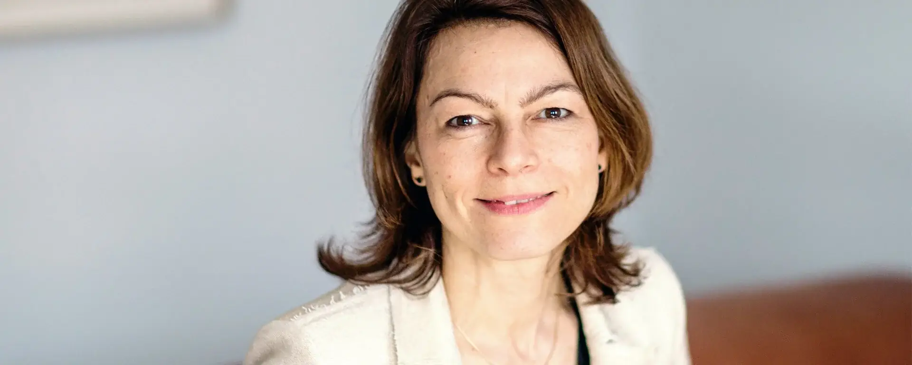
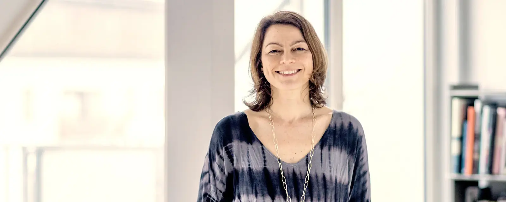

Über Charlotte
Lebenslang Lernende, Begleiterin, Künstlerin, Tänzerin.

Über Grenzen hinaus
Charlotte sieht sich als Reisende zwischen Kulturen und in einer Welt voller Wunder. Sie wurde in Frankreich geboren, lebt in Freiburg und hat in Lissabon eine zweite Heimat gefunden. Neben Deutsch, Französisch und Englisch sind Tanz und Malerei ihre Sprachen: Mit ihnen drückt sie sich aus, formuliert Visionen und verbindet sich über Grenzen hinaus, wo Worte nicht ausreichen.
„Das Bewusstsein dafür, dass wir unsere eigene Realität und unser Erleben selbst erschaffen, stellt für mich ein unheimliches Gestaltungspotenzial dar. Die Schönheit liegt im Auge des Betrachters. Kunst entsteht in uns.“
Sammeln, bündeln, verbinden, teilen
Charlotte teilt, was sie im Lauf der Jahre am meisten inspiriert und verändert hat. Sie navigiert zwischen Welten, baut Brücken, verbindet Menschen, integriert Bewährtes mit Neuem und verknüpft auch scheinbar Unvereinbares.
Sie ist überzeugt, dass jeder Mensch es verdient, sich innerlich frei zu fühlen, und die Welt mit seinem Sein bereichert.
Wofür sie arbeitet
Mit Kreativität, Leichtigkeit und Tiefe unterstützt Charlotte Menschen darin, ihren eigenen Weg zu gehen und sich frei und authentisch in die Welt zu bringen, Visionen zu entwickeln und umzusetzen.
Sich authentisch auszudrücken ist für sie eine zentrale Bedingung für ein Leben voller Freude und Harmonie. Innere Freiheit und tiefe Verbundenheit werden dann gleichzeitig spürbar.
Werdegang
Psychologie und Betriebswirtschaft, interne Change-Beratung und Führungserfahrung in Personal- und Organisationsentwicklung, Arbeit mit Menschen im In- und Ausland auf allen Hierarchieebenen. Dazu Einflüsse aus Kunst, Tanz, Yoga, Körperarbeit und Neurowissenschaft.
Inspirationsquellen
Geprägt haben Charlotte unter anderem hypnosystemisches Coaching, Generative Change und Systemic Trance Work, Konfliktklärungshilfe, Neuro Somatic Reprogramming und achtsamkeitsbasierte Stressreduktion. Generative Painting ist das Ergebnis dieser Erfahrungen.